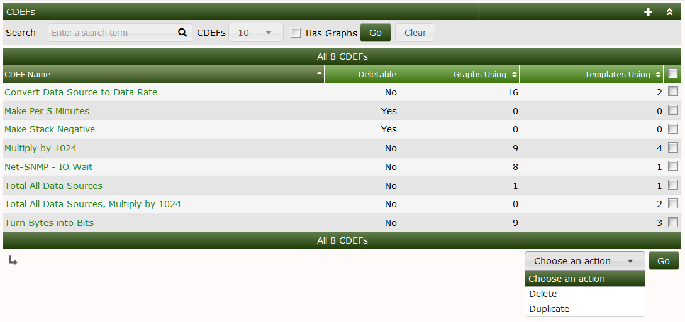
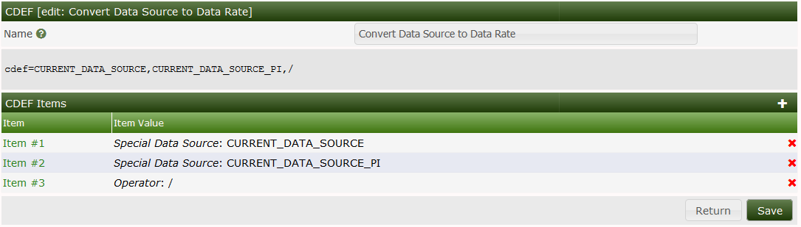
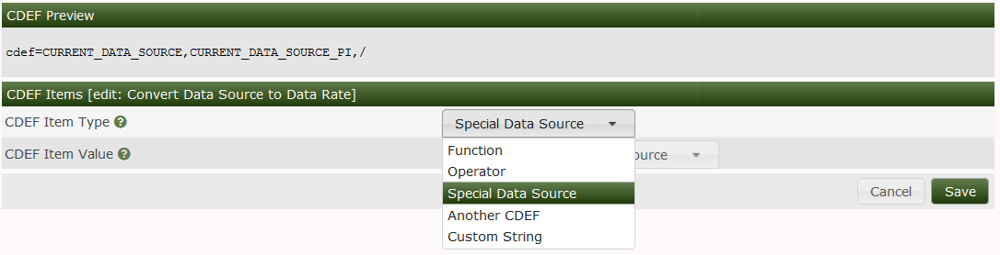
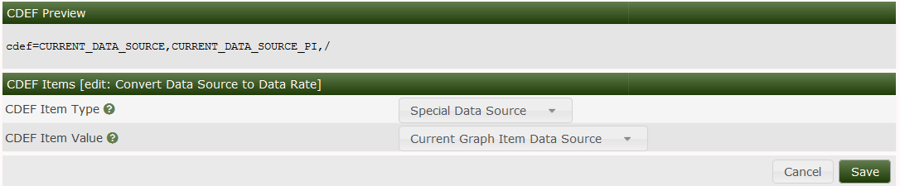

CDEF's in Cacti are a one to one analog to CDEF's in RRDtool. Cacti simply provides and interface to create and manage them. Once the CDEF's are created in Cacti they can be imported and exported globally.
CDEF's are mathematical formulas that either modify the numeric data from one to many data sources or VNAMES that you have in your Graph Template.
The format of the mathematical formulas is called Reverse Polish Notation (RPN). RPN was and is an early form of how Engineers entered equations into early HP and other Calculators to solve Engineering problems. The reason we still use it today, is that it follows a simple Stack principle. In other words, it's not broken.
CDEF's can get very complex as there are several mathematical functions available in the RRDtool command set.
In the image below, you can see all the CDEF's that are included in Cacti by default. There are quite a few of them. Many of the formulas in use are quite simple. If you want to view Tutorials on how to work with CDEF's you should go to the RRDtool Tutorial. There is also documentation at the RRDtool Website.
In this image you can see that you have the ability to Delete or Duplicate a CDEF, but note you will not be able to Delete any CDEF that is associated with a Cacti Graph or Graph Template.

When you Click on the CDEF's name, you will enter into an Edit screen. From there you will see an ordered list of your Stack. It normally will begin with something like the CURRENT_DATA_SOURCE which means that when you Add a Graph Item to either a Graph Template or Graph, you can select a CDEF. The Data Source associated with that Graph Items is the CURRENT_DATA_SOURCE.
After that, you may see a numeric number, followed by a math operator. That the simplest form of a CDEF. If you have drag & drop enabled, you can re-order the CDEF items using drag & drop. Otherwise you will see arrows that allow you to move the CDEF Items up and down.

When editing a CDEF, the first decision is what Type of Data you want to put on the Stack, you options as shown in the image below. They include:
| Name | Description |
|---|---|
| Function | A mathematical function that we will describe below |
| Operator | Common mathematical operators including (+, -, *, /, and %) |
| Another CDEF | Another Cacti CDEF. That could be confusing |
| Custom String | Something like a number, a 'U' or 'Nan' for example |

In this next Image, you will find a CDEF Item in the process of being added. Note that when you pick Special Data Source you have a drop-down that appears with the flavor of Special Data Source. There are many. They include:
| Name | Description |
|---|---|
| Current Graph Item Data Source | The value of the Data Source associated with the Graph Item |
| Current Graph Item Polling Interval | This value is otherwise known as the Step in RRDtool terminology |
| All Data Sources (No Dupes) | The total of all Data Sources removing any duplicate DEF's |
| All Data Sources (With Dupes) | Add the values from all the Data Sources whether or not they are duplicated |
| All Similar Data Sources (No Dupes) | Means all Data Sources with the same RRDtool Data Source name like traffic_in, and traffic_out |
| All Similar Data Sources (No Dupes) Poller Interval | The max of the poller intervals returned from all similar Data Sources |
| Current Data Source Item: Minimum Value | The RRDtool minimum value of the Current Data Source |
| Current Data Source Item: Maximum Value | The RRDtool maximum value of the Current Data Source |
| Graph: Lower Limit | The lower Limit of the Graph |
| Graph: Upper Limit | The upper Limit of the Graph |
| Count of All Data Sources (No Dupes) | The total count of all Data Sources without Duplication |
| Count of All Data Sources (With Dupes) | The total count of all Data Sources including Duplicates |
| Count of Similar Data Sources (No Dupes) | The total count of Data Sources with the same RRDtool Data Source Name |
| Count of Similar Data Sources (With Dupes) | The total count of Data Sources with the same RRDtool Data Source Name |
As you can see there is quite a bit of information that can be pulled from RRDtool for performing Graphical manipulation of Data.

This list of CDEF functions is long and it's best to refer directly to the RRDtool Manual for meanings and examples of their use. Cacti supports all of them, if you find one that is not supported, open an Issue on Github.
Copyright (c) 2004-2024 The Cacti Group